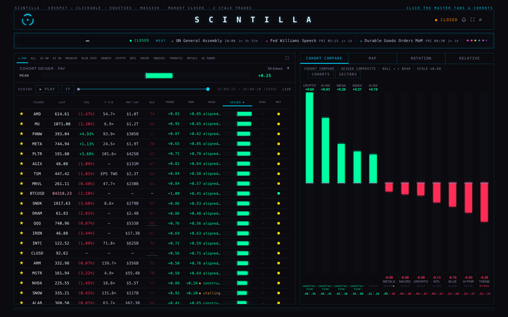
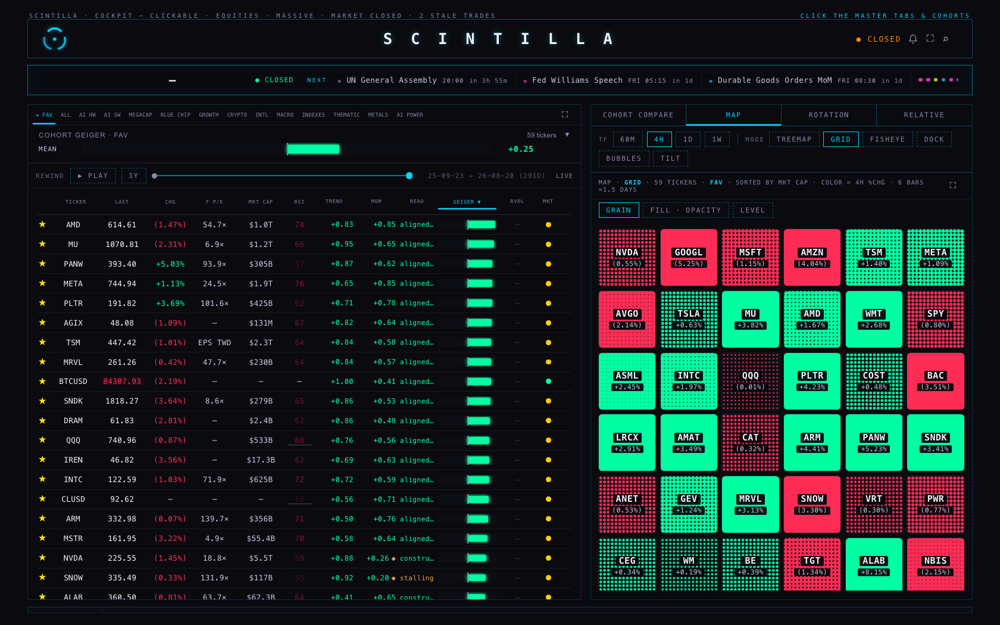
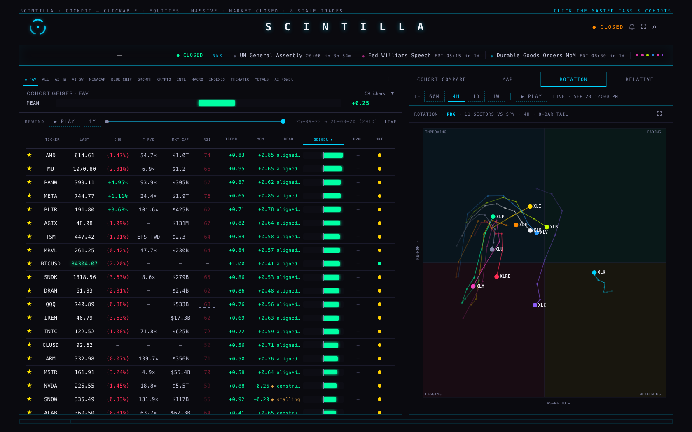
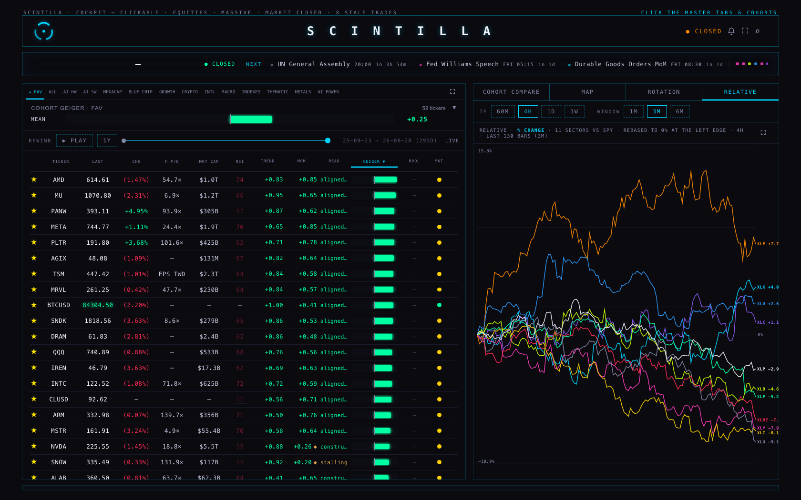
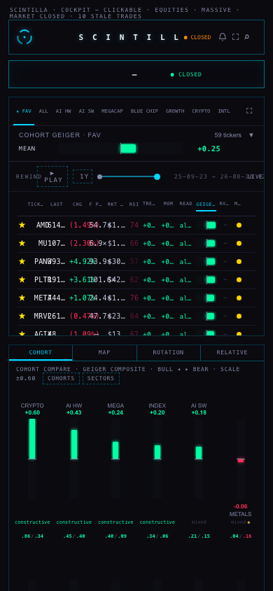
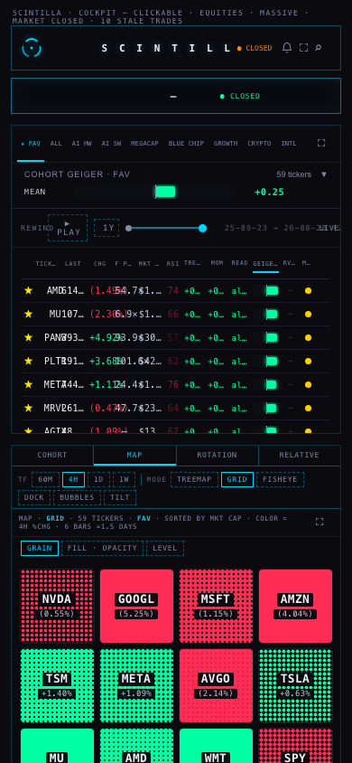
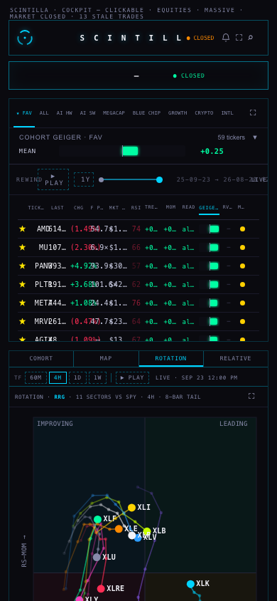
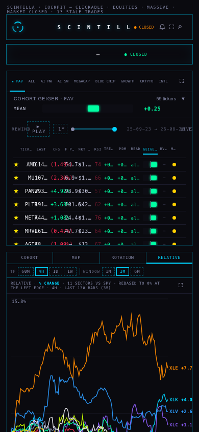

SCINTILLA · DASHBOARD · 23 SEP 2026
Two things were asked for. The right half of the dashboard is now one set of four tabs instead of a band stacked on top of a strip of three. And the Hub's slow opening was measured before anything was touched — the page itself was never the slow part, and the Geiger was never the slow part either.
"Cohort compare and the map, rotation and relative should all be tabs of the same right half."
"The hub. It loaded extremely slow. The Geiger is slow."
— Alan, 23 September
1 · One strip of four tabs
COHORT COMPARE used to sit above the MAP / ROTATION / RELATIVE tabs as a permanent band, taking about 110 pixels out of a pane only about 330 pixels tall. It is now the first of four tabs, and whichever tab you choose owns the full height of the right half.
- Nothing was dropped. Every view keeps the content and the controls it had. The cohort columns are the same columns, built by the same code, with the same click targets — clicking a column still switches the board to that cohort.
- The fan is bigger. Its bar used to be locked to a 114-pixel track because it lived in a thin band. On its own tab it stretches to the height of the pane, so the spread between cohorts is easier to read.
- The tab is remembered. Before, the pane always reopened on MAP. Now it reopens where you left it. If the browser refuses to store anything, it opens on MAP rather than failing.
- The timeframe row (60M · 4H · 1D · 1W) is not shown on the cohort tab, because the cohort fan does not run off it — its scale is its own, and it is printed in the strip's header. Every other tab keeps that row exactly as before.
- The left board was not touched, and the fear & greed strip that was removed from it has not come back.








2 · The speed, measured before it was touched
Every number below is a real browser at 1680×1050 with an empty cache, loading the page from scratch. The "before" runs are the live site at scintillahub.ai and an unchanged copy of production on this machine; the "after" runs are the same copy with the changes applied, loaded alternately with the unchanged one so that a slow minute on the data service hits both equally.
The live site before anything changed — 3 cold loads of scintillahub.ai
| What | Median | The three runs |
|---|---|---|
| First paint — the page appears | 172 ms | 180 ms, 172 ms, 144 ms |
| Tapes moving | 230 ms | 250 ms, 230 ms, 221 ms |
| Board rows carrying prices | 17.5 s | 30.2 s, 17.5 s, 16.9 s |
| Geiger values on the rows | 17.5 s | 30.2 s, 17.5 s, 16.9 s |
| Requests · weight | 104 · 478 KB | 104, 131, 87 |
So the page itself was never slow: it painted in about a fifth of a second and the tapes moved a fifth of a second after that. What was slow was the board's prices — and the Geiger column filled at exactly the same moment as the prices in every single run, because both are painted from the same board rows. The Geiger was not slow. It was waiting, like everything else, for one request.
After the changes — the unchanged copy and the changed copy, loaded alternately
Loaded one after the other, 3 times each, on the same machine and the same minute, so a slow spell on the data service lands on both. This evening the data service was far slower than it was at the first measurement, which is why the unchanged copy looks worse here than it did live earlier — that is the honest comparison to read: the two columns, not this table against the one above.
| What | Unchanged (production) | With the changes |
|---|---|---|
| Board rows carrying prices — median | 9.6 s | 3.7 s |
| First paint — median | 64 ms | 68 ms |
| Tapes moving — median | 147 ms | 140 ms |
| Whole-universe price requests per load — median | 5 | 3 |
| Duplicate requests suppressed — median | 0 | 5 |
| Total requests — median | 89 | 74 |
Every run, in full: unchanged 5.1 s / changed 3.7 s; unchanged 9.7 s / changed 5.0 s; unchanged 9.6 s / changed 3.6 s.
3 · The three causes, with numbers
Cause 1 — the same request, three or four times at once
The whole-universe price request (all 364 tickers in one call) was being made by three different parts of the page at the same moment, none of them aware of the others: the board's two-second tick, the board's own price read, and the fear & greed reading. Timed from this machine with plain requests, one after another:
| What was asked | How long it took |
|---|---|
| 364 tickers, on its own | 3.6 s |
| 364 tickers, four at once — what the Hub was doing | 7.7 s · 8.9 s · 9.8 s · 10.3 s |
| Six batches of 61, one after another — the obvious "fix" that is not one | 41.9 s in total |
The requests fight each other, so asking four times costs far more than four times nothing — it costs everyone. Splitting the request into small batches is worse still, which is why that was not done.
Fixed: while a request to that address is in flight, everyone who asks for the same thing is handed the same one. The symbol lists are now written in the same order by every caller so they can be recognised as the same request. In the runs above this suppressed five duplicate requests per load.
Cause 2 — the fear & greed reading ran three times over
That reading caches itself for ten minutes, but it only wrote the cache when it finished. Anyone who asked while the first one was still working started another. Three were running at once on a cold load, and each one pulls the whole universe of prices plus five sets of daily bars — which is where the duplicate /candles (thirteen in one load) and the duplicated database reads came from as well.
Fixed: callers now share the run that is already going. And because that reading is not what you look at first, it now waits for the board's first accepted prices before it starts — with a ten-second cap, so a dead data service can never hold it up for ever.
Cause 3 — the board waited for all 364 before showing any
You can see about sixty rows. The board was holding all of them back until prices for all 364 arrived, including every ticker in a cohort you were not looking at. Sixty tickers came back in about a second when the service was healthy; 364 took several seconds at best and, this evening, sometimes did not come back at all.
Fixed: the first request asks only for the rows on screen, and the very next one — a quarter of a second later — asks for the whole universe. So the visible prices arrive early and full coverage still arrives within a second, which means switching cohorts still cannot land you on an unpriced row.
The suspect that was not guilty: the "how unusual" watcher
The brief asked whether the watcher that re-runs on every change to the page was a cause. It was measured rather than assumed: every watcher on the page was counted and timed for a whole load. The one in question ran 18 to 23 times, for one millisecond in total, across roughly 450 page changes. It is not a cause and it was left alone.
Long freezes of the main thread were also counted: none at all in the healthy runs. The page was never the slow part.
4 · What is left for the data service, not the Hub
These are for whoever owns the chart API. Nothing here was changed.
| What | Measured | When |
|---|---|---|
| Whole-universe prices, one request alone | 3.6 s | 19:35Z |
| The same request during a bad spell | 15.0 s, and a 59-ticker request returned an error after 20.1 s | 20:01Z |
| The same requests minutes later | 59 tickers 0.31 s · 364 tickers 1.2-2.2 s · the Geiger artifact 1.8 s | 20:02Z |
| What that does to the Hub | During the bad spell neither the unchanged Hub nor the changed one could show a single price within 90 seconds. That is not something the Hub can fix. | |
Two things are worth someone's attention there: the first request for a set of tickers is dramatically slower than the same request a moment later, which is what makes duplicate requests so expensive; and the service was returning 503 for a small request at 20:01Z while answering a larger one.
5 · How often the Hub asks, once it has loaded
Watched on the live site for 105 seconds, read-only: the board's price loop is healthy — 34 runs, no failures, a fresh request every two to three seconds, each one for the whole 364-ticker universe. The Geiger artifact is a separate read, held for 30 seconds and refreshed with the board's own 45-second rebuild; on a cold load it was fetched three times within two seconds (that duplication is one of the things now shared).
So the Geiger is not on a slow cadence and is not stuck. Its numbers appear when the board rows appear, which is why fixing the prices fixed the Geiger's arrival too — 28.2 s to 22.1 s during the bad spell, and with the board's prices at 3.7 s when the service was healthy.
Worth someone's judgement, not changed here: asking for all 364 tickers every two seconds is a lot of asking. It is also what keeps that endpoint warm, and warm is 0.31 s where cold is seconds — so it should not be changed without measuring what happens when it stops.
6 · Where each number on this page comes from
- First paint, first prices, Geiger filled, tapes moving — read inside the browser itself, by watching the page 10 times a second until the board's price cells contain digits, until the rows carry a Geiger value, and until the tape has items. Nothing is estimated.
- Request counts and sizes — the browser's own network record for the page.
- The endpoint timings — plain requests to the chart API from this machine, timed with
curl, one batch size at a time, and then four at once to reproduce what the Hub was doing. - The observer cost — every MutationObserver on the page was wrapped in a counter for the whole load, so the figure is the real number of calls and the real milliseconds, not a guess.
7 · What could be wrong
- The measurements are of one evening, on one machine. The data service's speed swung between 0.31 s and "no answer in 90 seconds" within the same hour. The before/after runs were interleaved — unchanged, changed, unchanged, changed — so both met the same conditions, but a different evening could give different absolute numbers.
- The screen-first price request is one extra request per page load. It is a small one, and it is only made once, but it is not free.
- The fear & greed gauge now appears a moment later than the board's prices. That is deliberate. If the data service is dead, it appears ten seconds in regardless.
- Sharing a request means sharing its failure. If the one shared request fails, everyone waiting on it is told it failed, exactly as if each had asked separately — there is a test for this, and a failure is never remembered as an answer.
- The cohort fan on a phone still needs a scroll to see the last six cohorts. That is the strip's own two-row rule from 18 September, not something introduced here.
- One existing test was widened, not weakened. A test pinned the exact text of the macro request; that request now goes through the shared helper, so the test accepts either spelling of the same address. Its point — that the macro rows read the chart API — is unchanged.
8 · What I did not do
- Nothing was deployed or pushed. The work is a local branch. The coordinator merges and deploys.
- The chart API was not changed. Its own speed is the biggest remaining number and it belongs to whoever owns that service.
- No price table was written to, and no schedule, permission or credential was touched.
- The left board, the other rooms and the Indicator Lab were not touched.
- The duplicated database reads were left alone. They fall by two thirds on their own once the sentiment reading stops running three times, and rewriting the shared read helper on a timebox was a worse risk than the gain.
- Nothing was proved about a fast market day. These measurements were taken this evening, with the data service unusually slow.